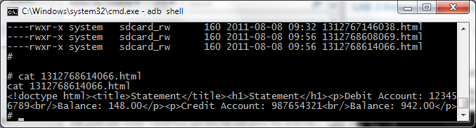

Lab 3 - Insecure file storage
Mobile apps today do a lot of crazy things. Often, it is a necessity for a developer to store files on the device itself, but there are numerous issues that may arise from doing this.
One example, is storage on an SD card. Typically, if we look at a mobile application, its file systems are sandboxed into certain directories preventing other applicaitons that may be malicious from accessing another apps sensitive data.
However, storage on an SD card raises various issues on Android since the card is removable. If the card is placed in another system that doesn’t obey the file permission rules, the files would be openly accessible. This makes it important to understand why developers should consider where to store their files and whether the files should have added protection.
In this lab, we’ll see how Android file permissions are assigned when files are stored on an SD card.
Load the base.apk, and open the application.

Open the “Statement” menu, and load a statement from the list. If none exist, then first create a transfer between accounts and a statement will automatically be generated.
You’ll notice that these statements are also available offline.
Let’s go into the SDCARD directory. SD cards are mounted at /mnt/sdcard for the emulator (this may differ on a real device).
Also, you’ll notice that within the application, statemnets are created in what seems like a webview or HTML file. We can find this HTML file on the SDCARD which can be accessed by going to
/mnt/sdcard/
the file will be named by number date and opening it will show you the insecurely stored statement file in HTML format. anyone with access to the sdcard will be able to gain access to this file. Also other applications could read from the file.  Take a look at the file permissions:
Take a look at the file permissions:
----rwxr-x system sdcard_rw 160 2011-08-03 16:48 1312361332270.html
the file is stored as world readable, allowing any other application to access the file.

We could also simply just read the HTML file right away, disclosing information about the user’s bank account and statements.
Solution
The key lies in setting the permission flags on the sensitive files. Obviously an attacker with root access (or an application that can root the phone) will still be able to open the file in question, but a standard app that doesn’t break out of the sandbox will not be able to access files that are private.
In the FilePermissionsSolution branch of the code repository, you will see that we save the file with the private mode set and no longer store it on the sdcard:
Liquid error: fork() function is unimplemented on this machine